Personagens de Konoha
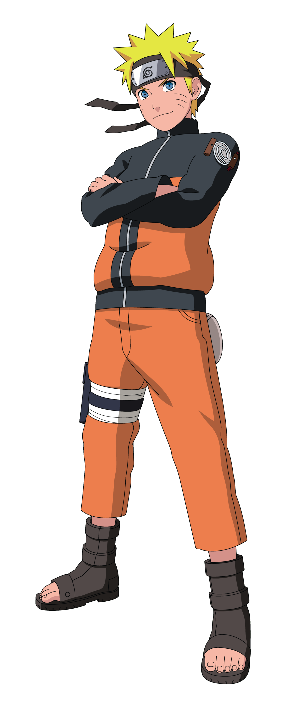
Naruto Uzumaki
O futuro Sétimo Hokage e protagonista do anime.
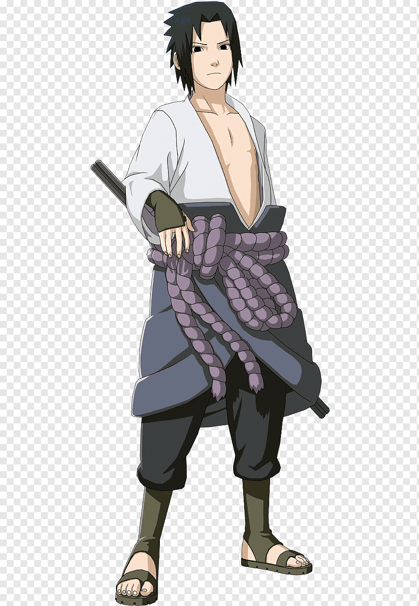
Sasuke Uchiha
Último sobrevivente do Clã Uchiha e rival de Naruto.

Sakura Haruno
Ninja médica do Time 7 e discípula de Tsunade.
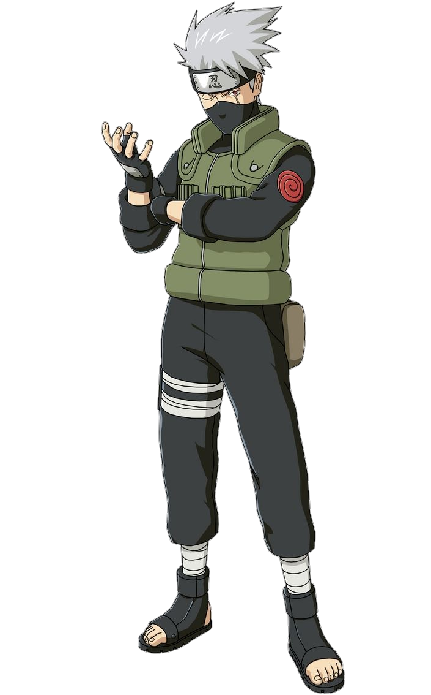
Kakashi Hatake
Professor do Time 7 e Sexto Hokage.
Time 8

Hinata Hyuga
Herdeira do Clã Hyuga e usuária do Byakugan.
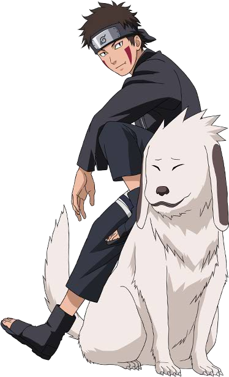
Kiba Inuzuka
Ninja especialista em combate ao lado de Akamaru.
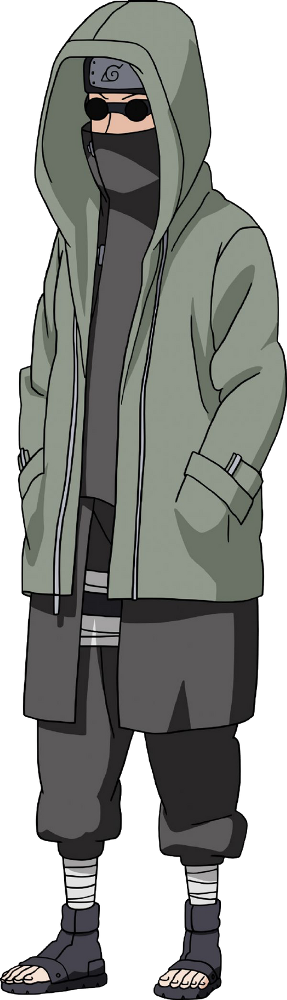
Shino Aburame
Controla insetos utilizando técnicas do Clã Aburame.
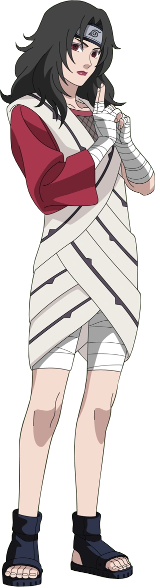
Kurenai Yuhi
Líder do Time 8 e especialista em genjutsu.
Time 10
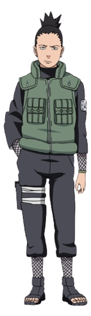
Shikamaru Nara
Um dos ninjas mais inteligentes de Konoha.
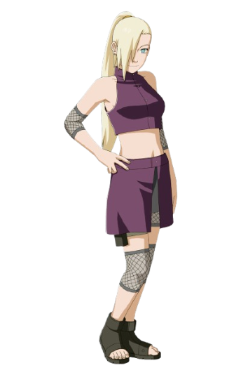
Ino Yamanaka
Membro do Clã Yamanaka e ninja sensorial.
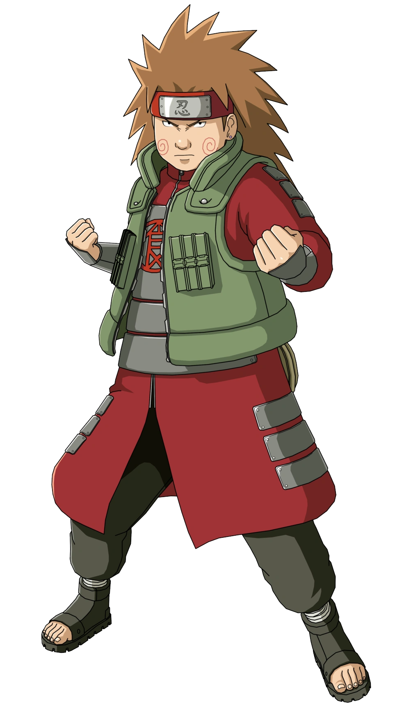
Choji Akimichi
Utiliza técnicas de expansão corporal.
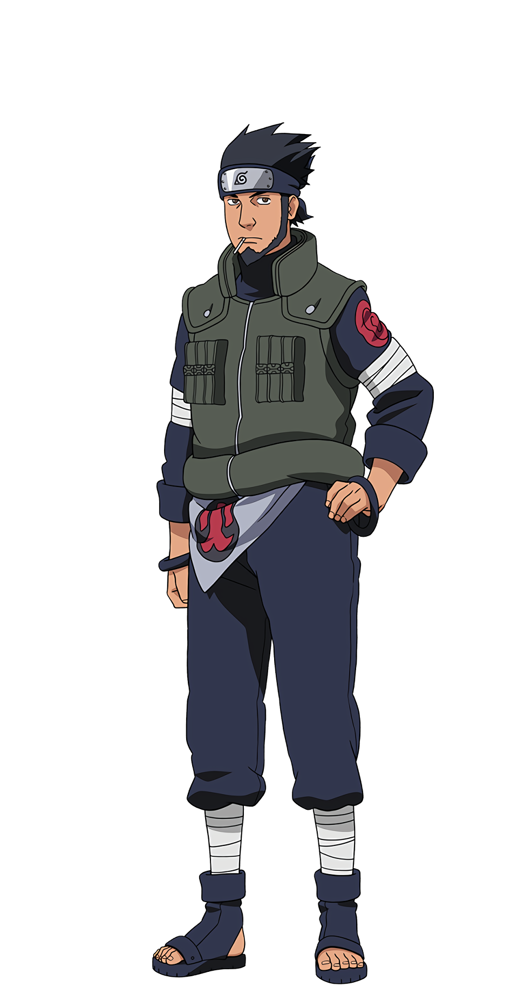
Asuma Sarutobi
Líder do Time 10 e filho do Terceiro Hokage.
Time Guy
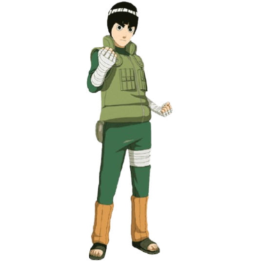
Rock Lee
Mestre do taijutsu e discípulo de Might Guy.
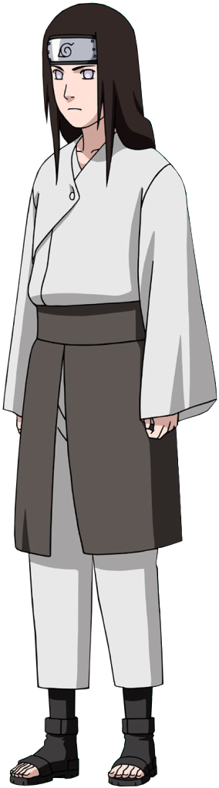
Neji Hyuga
Gênio do Clã Hyuga e usuário do Byakugan.
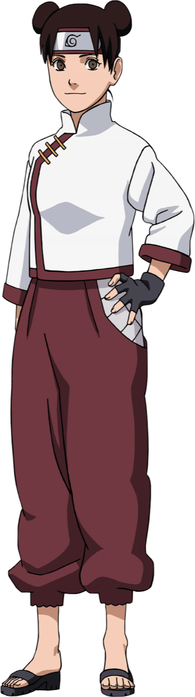
Tenten
Especialista em armas ninjas.
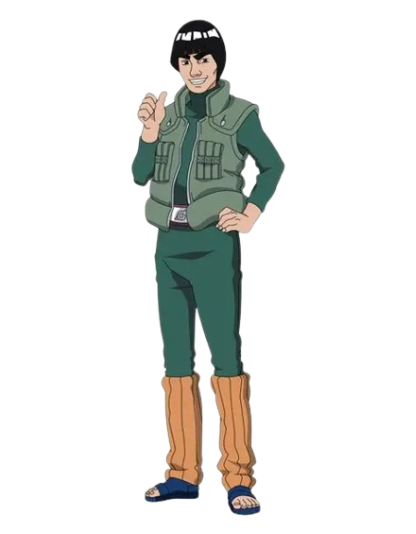
Might Guy
Mestre do taijutsu e rival eterno de Kakashi.
Akatsuki
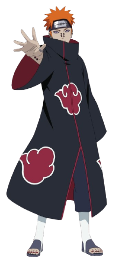
Pain
Líder da Akatsuki e portador do Rinnegan.
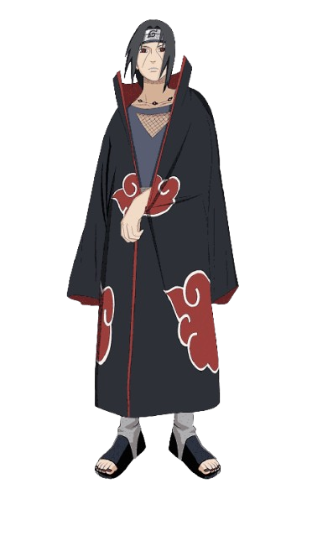
Itachi Uchiha
Um dos ninjas mais talentosos do Clã Uchiha.
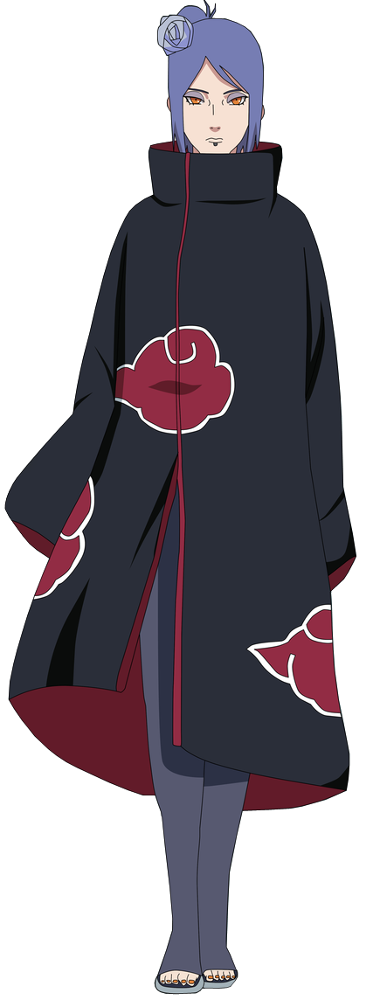
Konan
Única mulher da Akatsuki e parceira de Pain.
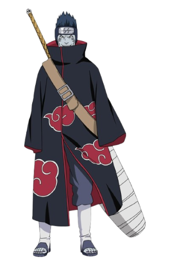
Kisame
Espadachim da Névoa e parceiro de Itachi.
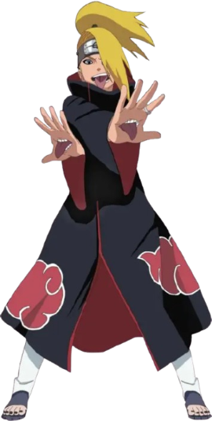
Deidara
Especialista em explosões usando argila.
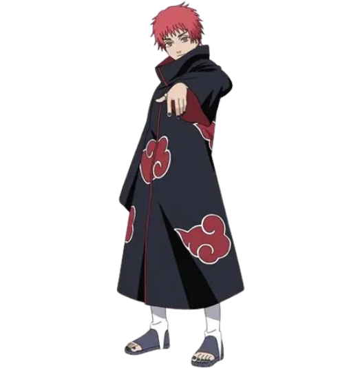
Sasori
Mestre das marionetes da Vila da Areia.
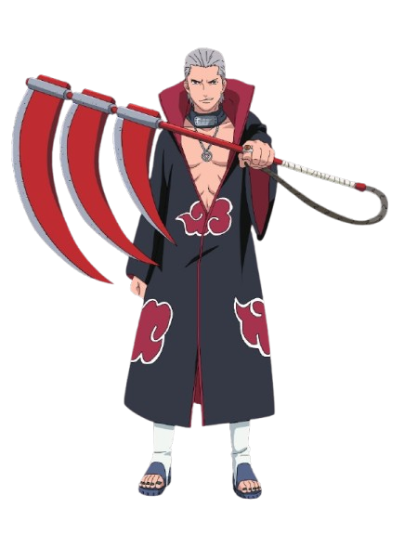
Hidan
Membro imortal da Akatsuki.
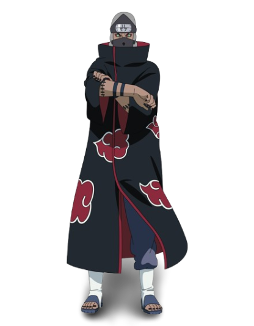
Kakuzu
Caçador de recompensas com cinco corações.